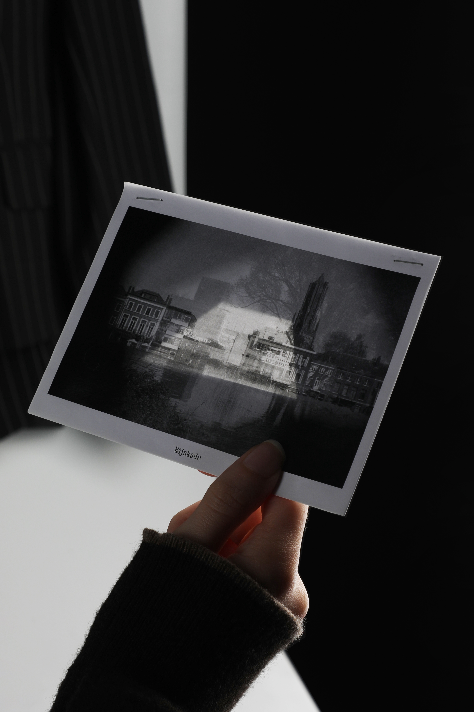
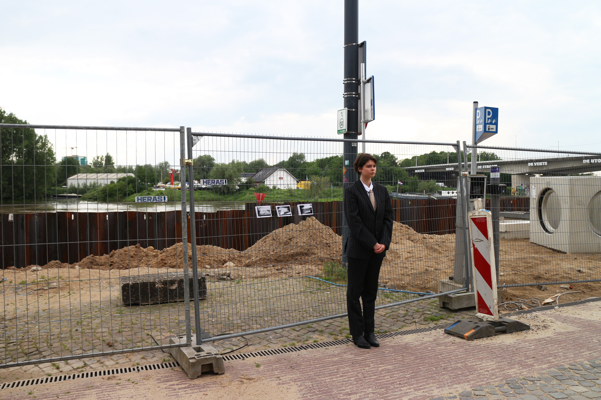
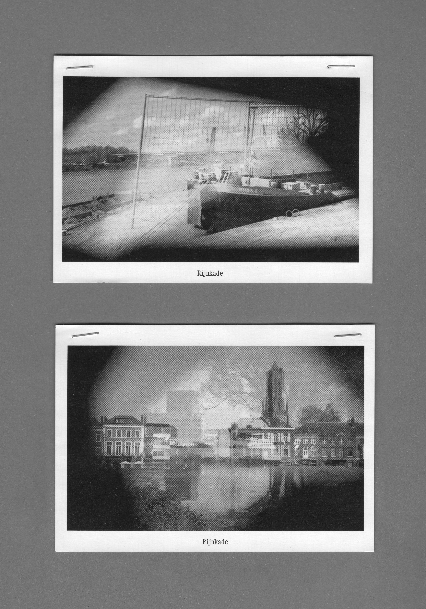
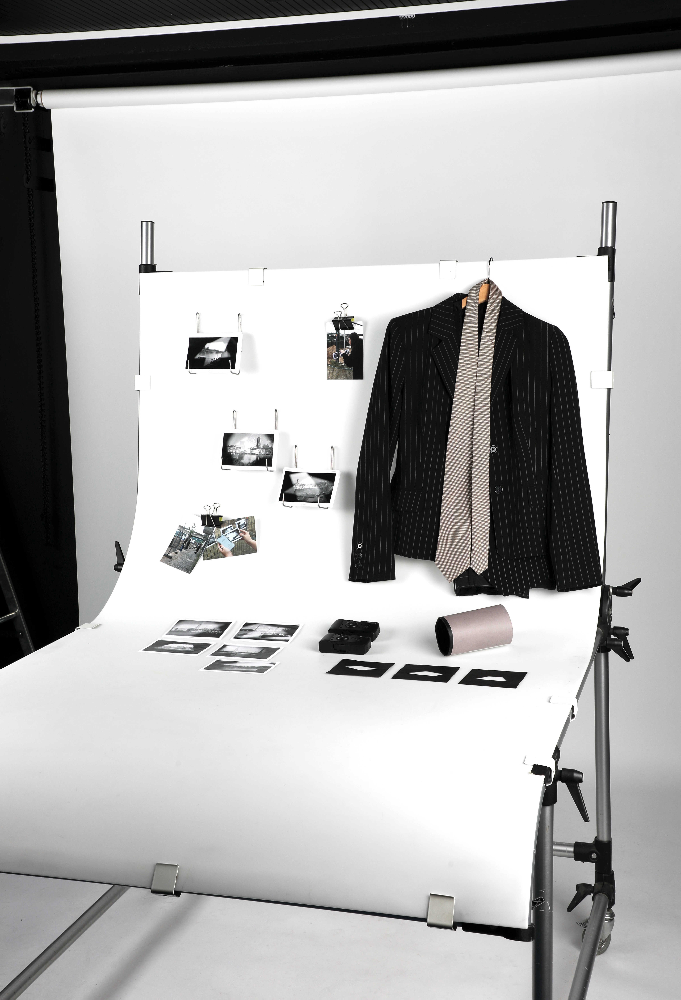
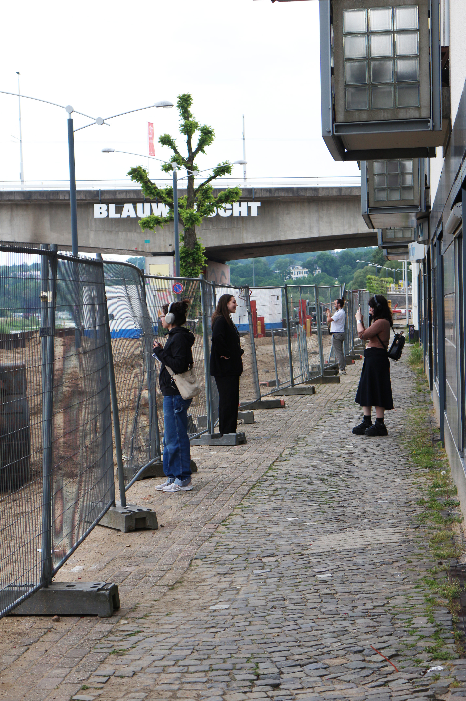
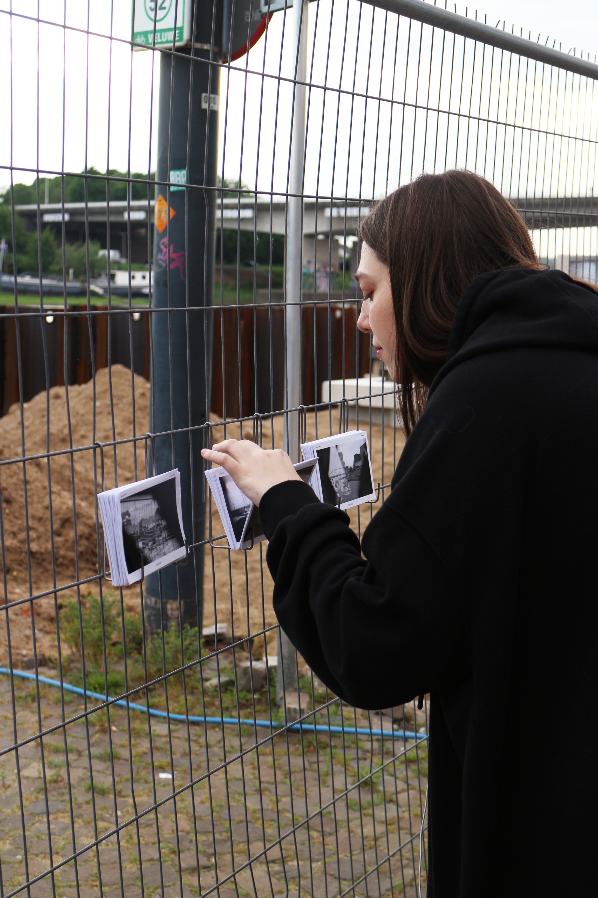
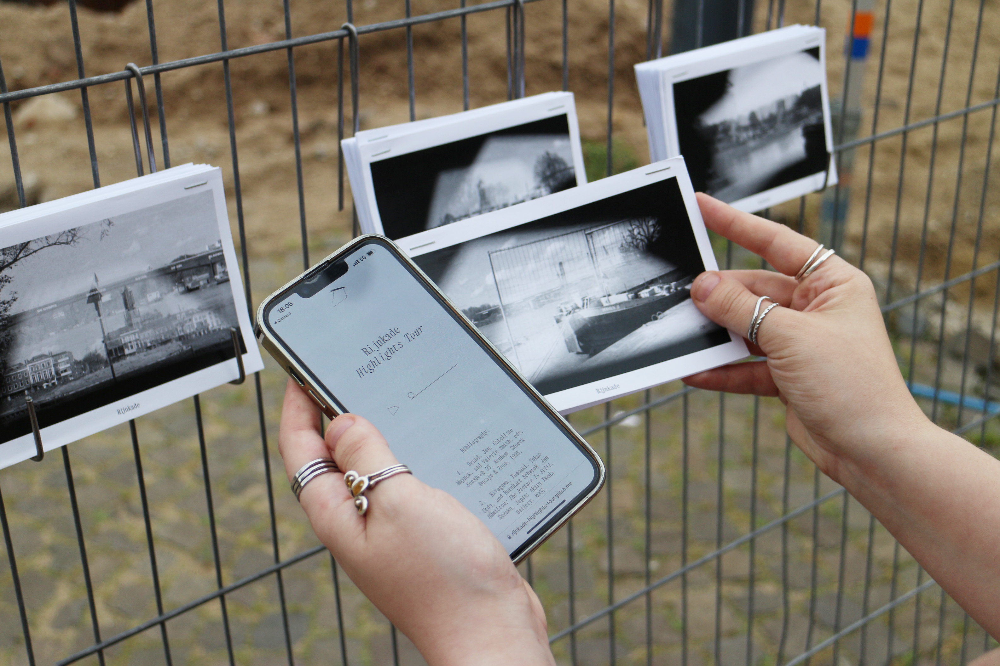
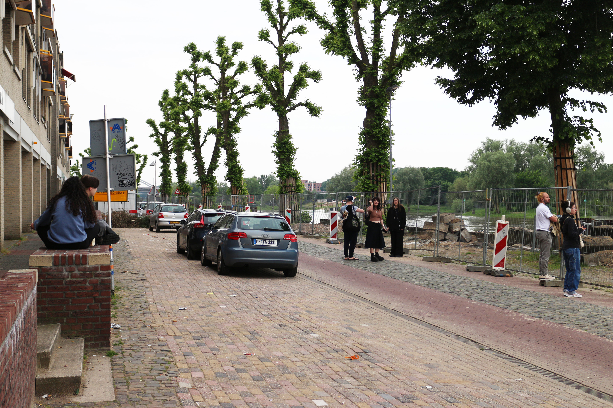
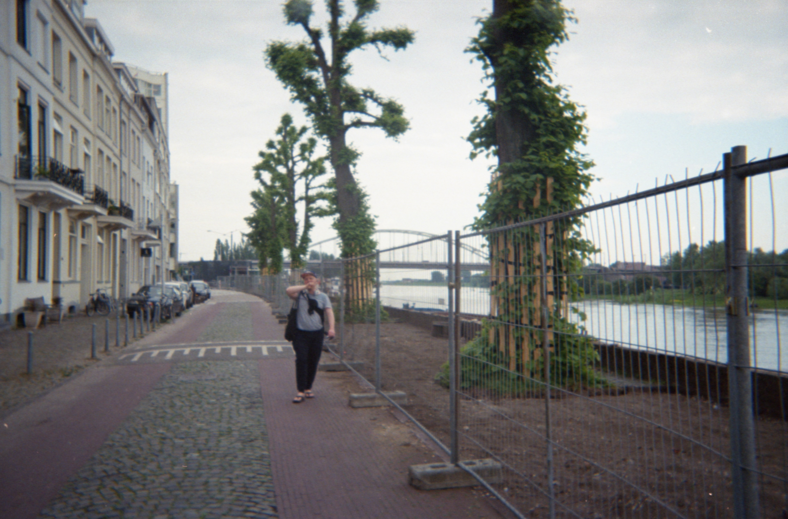

Performance
May 2024






Audio guide, website, performance, postcards, documentation footage
Photography: double exposure, 35mm b&w film, custom filters
Typeface: Xanh Mono
Audio editing: Luan Conzett
Guided by Monika Gruzite
ArtEZ
2024

Rijnkade Highlights Tour is an artistic research into the concept of a museum as a performance of its functions. The Rijnkade is seen as a theater stage — observed from the two bridges and the opposite river bank. At the same time, it is explored as an “invisible” museum, exhibiting a re-enaction of selected parts of the Sonsbeek ’93 exhibition: Bridges of Arnhem by Rémy Zaugg and Barge by Ann Hamilton. The project resulted in a performance of a guided museum tour, following the remaining traces of the artworks, as well as the writings about them and other parts of artists’ oeuvres.
The performance explores how a museum as a physical space can be substantialized by time, observer’s sight, and a few physical anchors — culturally defined museum attributes. By publicly exhibiting the connection between the performer and the audience, as well as unintentional observers, Rijnkade gains defined boundaries and lost-in-time meanings, thus becoming a third space.

